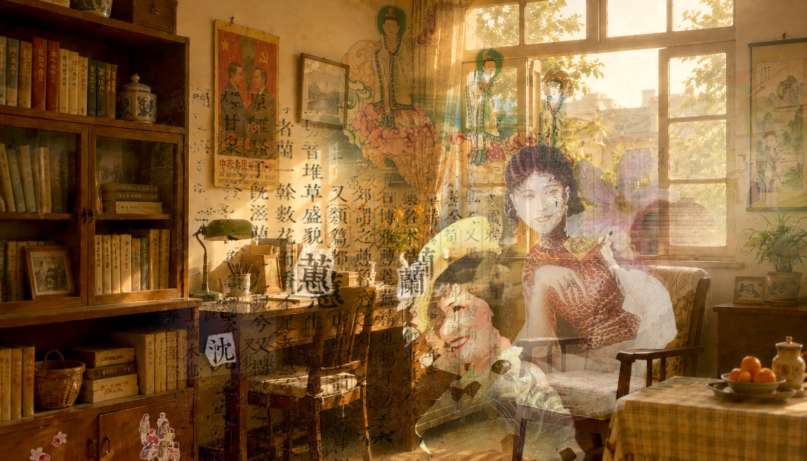

1966年，中国进入文化大革命。 In 1966, China entered the Wénhuà Dàgémìng (“Cultural Revolution”).
学校停课，书籍被烧，知识分子被批斗、下放、迁散。对许多亲历那个年代的人来说，这是一段不愿回忆、不再提起的创伤。 Schools closed. Books were burned. Intellectuals were denounced, sent down, and scattered. For many who lived through that time, it is a trauma they are unwilling to remember or speak of again.
但不说，不代表没有发生过。 But silence does not mean it never happened.
1944年，沈蕙兰生于安徽芜湖的知识分子家庭，后被下放农村再教育。 Born in 1944 into an intellectual family in Wuhu, Anhui, Shen Huilan was later sent to a farm for re-education.
这是她的故事，也是那一代人中无数个没有被记录下来的故事之一。 This is her story, and one of the countless stories from her generation that were never recorded.
全屏观看，体验更佳
This story is best experienced in fullscreen.